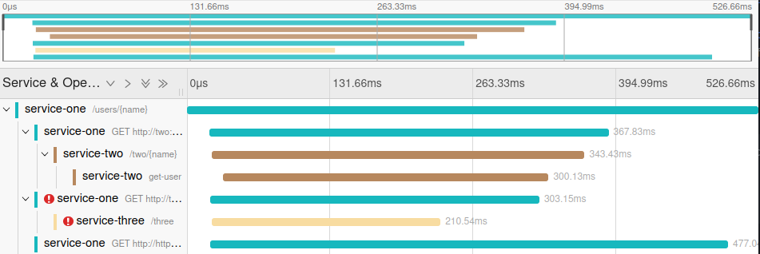

Proper logging in PHP with PSR-3
Who is this article for?
This post is for people that do day-by-day busywork coding, and for team leads that want to direct their peers towards better logging practices.
Note that this article comes from my regular need to present these exact points to different people, multiple times a year, in multiple teams, in multiple companies.
Also, we will not talk about how to configure a PSR-3 logger, but rather how to use one.
Handling errors properly
Error/exception handling is the main use-case for logging.
When logging exceptions, please pass the Throwable instance to the 'exception' context key.
try {
// logic here
} catch (SomeException $failed) {
$this->logger->error('Something went wrong', [
'exception' => $failed,
]);
}
Avoid cluttering the logger call with data deriving from the exception: it's not the logger call-site's job, and you are just repeating work.
I often see unnecessary code like:
try {
// logic here
} catch (SomeException $failed) {
$this->logger->error('Something went wrong', [
// first mistake: we forgot 'exception'
'previous' => $failed->getPrevious(), // let the logger do this!
'line' => $failed->getLine(), // already part of the stack trace
'error' => $failed->getMessage(), // also always rendered
'error_type' => $failed::class, // done by the logger, usually
]);
}
The logger itself must instead be configured (and usually already is configured) to render:
-
the exception
::class - the exception message and code (codes are not really relevant any more, in this century)
- the stack trace
- previous exceptions
- additional exception fields
Your responsibility is to instead pass context information that the logger can't infer on its own.
What if my code fails gracefully, and does not raise an exception?
if (is_wrong($something)) {
$this->logger->warn('Something went wrong', ['something' => $something]);
}
For business-specific failures that deserve a type, we can upcast them to a Throwable anyway:
if (is_wrong($something)) {
$this->logger->warn('Something went wrong', [
'something' => $something,
'exception' => new SomethingWentWrong($something), // Throwable
]);
}
Having clear exception types, even if used just with the logger, will allow you to easily detect multiple code locations affected by the same kind of failure later on.
Beware: raising exceptions and logging both come with substantial CPU, memory and IO overhead, so you should always decide carefully when logging and exceptions can be raised in a tight loop.
Remember also that a Throwable always collects the entire stack trace it was raised from,
which may affect garbage collection, if the logger keeps messages in memory.
Loggers are perfectly capable of determining the stack trace of a raised log message: the 'exception'
key is not necessary for that feature to work, so creating a new Throwable is your decision.
"Some logs" are better than "no logs"
I'm personally not a fan of cluttering code with log and debug statements, but it is undeniable that logging will help you keep a general understanding of how your software is behaving in production, both when healthy or unhealthy.
A system that produces no output may be functioning perfectly, or be completely broken: having some insight into whether it is "still ticking" is a good idea.
Not sure if everything OK, or monitoring is broken.
I recommend having $logger->info('Heartbeat'); or similar calls in code that runs in long-running
operations, polling loops, or that are sitting idly, waiting for input:
$eventLoop->whenever(function ($someEvent) {
// main application logic
});
$eventLoop->periodically(function () {
$this->logger->info('still here, waiting for you');
}, Time::seconds()->multiply(120));
$eventLoop->run();
You can either configure the logger or the call-site to only log a percentage of the calls, where the system would otherwise become too chatty.
Periodically logging is not a replacement for an external health-check probe .
Note that you may want to also use metrics instead (more on this below).
Injecting loggers
Please use dependency injection when requesting a logger:
final readonly class MyService implements SomeService
{
public function __construct(private LoggerInterface $logger) {}
function someLogic() {
$this->logger->debug('Look ma, I got the logger via DI!');
}
}
Besides avoiding the pitfalls of service location and global state, you get:
- a clear declaration that your code unit will emit log messages
- the possibility of picking a specific logger for each service
- the ability to use non-magic test spies/mocks to verify logging behaviors
Here's how one could customize the logger in a service definition:
$serviceDefinitions->add(
SomeService::class,
function (MainLogger $rootLogger) {
return new MyService(
$rootLogger
->forWiredService(SomeService::class)
->withEnvironment($someEnvironment)
);
}
);
Here's how one could work with log messages in a test:
#[Test]
function my_service_does_a_bunch_of_things_in_a_very_specific_order(): void
{
$testSpyLogger = new RecordingLogger();
$systemUnderTest = new MyService($testSpyLogger);
$systemUnderTest->doSomeWork();
Assert::equals(
[
'Extracted data',
'processed row A',
'processed row B',
'failed to process row C',
'finished',
],
$testSpyLogger->messages
);
}
Using the logger for measurements?
I often see teams using loggers to record metric information, then grepping through the result,
to produce graphs or further analytics data:
final readonly class LoggedCart implements CartService {
public function __construct(
// ...
private LoggerInterface $logger,
) {}
public function cartCheckout(
// ...
): void {
// ...
$this->logger->info(
'cart.checkout',
['total_amount' => $cart->totalAmount()]
);
}
}
While you can most certainly do that, the logger is the wrong abstraction for metrics.
The correct tool for metrics is OTEL metrics, (although any "metrics-alike" tooling works too):
final readonly class LoggedCart implements CartService {
public function __construct(
// ...
MeterProvider $metrics,
) {
$this->checkoutAmounts = $metrics->createHistogram('cart.checkout.total_amount');
}
public function cartCheckout(
// ...
): void {
// ...
$this->checkoutAmounts->record($cart->totalAmount());
}
}
See also the MeterProviderInterface.
With this setup, your metrics can be collected more efficiently (in batches), and can be sent to dedicated backends, such as time series databases, ready to be viewed.
Note that you are still free to wire the metrics reader so that it forwards recorded metrics to your logger!
Logging durations
You will often see developers logging the elapsed time for an operation:
final readonly class CreditCardCheckout implements Checkout {
public function __construct(
// ...
private LoggerInterface $logger,
) {}
public function cartCheckout(
// ...
): void {
$start = $this->clock->now();
$this->logger->debug('checkout.start', ['time' => $start])
// ...
$end = $this->clock->now();
$this->logger->log(
'checkout.end',
[
'time' => $end,
'duration' => $end->diff($start)
]
);
}
}
Similarly to metrics, a logger is not the correct abstraction: instead, look at OTEL Tracing
Traces allows for a cleaner implementation:
final readonly class CreditCardCheckout implements Checkout {
public function __construct(
// ...
private Tracer $tracer,
) {}
public function cartCheckout(
// ...
): void {
$span = $this->tracer->spanBuilder('checkout')
->startSpan();
// ...
$span->end();
}
}
The API can be further improved with your own Tracer additions, and you can still
send span start/end to your logger.
By using the correct abstraction, dedicated trace collector software (such as Jaeger, Zipkin, AWS X-Ray, etc.) can give you full insight into how operations are nested, run concurrently, etc:

Message interpolation
Please don't do this:
$this->logger->info('user ' . $user->username() . ' logged in');
PSR-3 specifies a {bracket_based} message interpolation convention, which you can rely upon:
$this->logger->info(
'user {username} logged in',
['username' => $user->username()]
);
With the above, you gain:
- a structured, searchable "username" field in your logs
- clarity on which bits of the message are dynamic, especially when interpolated values contain spaces
Remember that this behaviour needs to be enabled.
Log levels
The log level mostly has an effect on:
- whether the log message will be emitted
- who will be notified
It is important to not raise the log level unnecessarily, or you may run into a full disk, capped out monitoring system, full email inbox, or annoyed on-call coworker.
Logs should capture our attention only when relevant: attention is a valuable currency
When reviewing new code, always ask yourself whether you can "push the log level down".
For tight loops, debug could suffice. You also don't want to see these messages in production: they
should be turned off by default.
Successful operations should probably receive an info level: you also want to know if a system
is working correctly.
For acceptable blips in your data, a notice could work.
Data processing that failed, but recovered with a fallback, should probably receive a warning.
Anything from exception up should be discussed within your team and business domain, when introduced.
Avoid performing I/O during logging
Logging is a delicate matter: avoid making it more delicate, as it is your last resort in trying to understand a failing system.
Following code is problematic:
$this->logger->error(
'user {username} failed to log in',
[
'exception' => $exception,
'username' => $this->users->get($userId)->username()
]
);
At this stage, you do not know if the system is in an irrecoverable state, and this entire expression may fail.
Additionally, your logging operation is potentially slowing down the system: perhaps logging $userId
sufficed?
As a good rule of thumb, the logger call-site should not perform expressions that can @throw,
or which interact with global state (a @phpstan-pure or @psalm-pure declaration can help).
Conclusion
This article hopefully contains things that you can point at when discussing logger usages with your colleagues: I sure needed this compendium of patterns for my future self ☺️